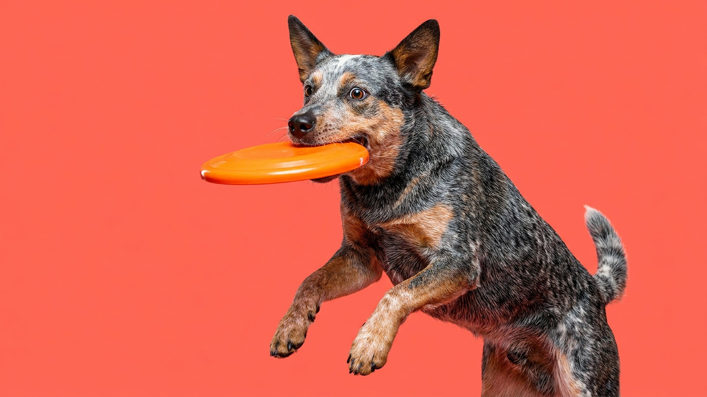

Хилер сделал два круга по двору, обнюхал забор и уже подталкивает вас носом: «дальше?». Час выгула, который валит с ног лабрадора, для него — разминка. Эту породу двести лет выводили гонять скот по австралийской жаре с рассвета до заката, и мозг у неё настроен на работу, а не на диван. Ниже — сколько нагрузки хилеру нужно на самом деле, откуда берётся привычка прихватывать за пятки и кому такая собака подходит, а кому точно нет.
🐾 Ваш питомец — австралийская пастушья собака?
Заведите профиль в AnimaLife: приложение запомнит породу, возраст и вес и будет подсказывать по уходу именно для неё. Вопросы AI-ветеринару — круглосуточно и бесплатно.
Завести профиль → Завести в MAX →
У вас iPhone? AnimaLife есть в App Store
Австралийская пастушья собака (её же зовут голубой или красный хилер, австралийский кеттл-дог) появилась в XIX веке для перегона крупного рогатого скота на огромные расстояния. Отсюда всё: выносливость марафонца, крепкое здоровье, независимая голова и мгновенная реакция.
Это компактная (17–24 кг), мускулистая собака с фирменной крапчатой шерстью — голубой или рыжей. Живут хилеры долго, до 13–16 лет, и почти всю жизнь остаются в тонусе. Порода не декоративная и не «для галочки на прогулке» — это рабочий партнёр.
Двух коротких выгулов «по нужде» катастрофически мало. Ориентир для взрослого хилера — 1,5–2 часа настоящей нагрузки в день, и половина из неё должна грузить не лапы, а голову.
Недогруженный хилер не скучает молча. Он начинает «работать» с тем, что есть: грызёт плинтус, роет, облаивает окно, гоняет кота — и делает это с той же самоотдачей, с какой предки гоняли быков.
Хилер (от английского heel — «пятка») управлял стадом, покусывая коров за ноги сзади. Этот инстинкт никуда не делся: щенок может прихватывать за щиколотки детей, бегунов, велосипедистов — не из злобы, а потому что «двигается — значит, надо направить».
Ругань тут не работает, а азарт только раскручивает. Что помогает: с первых недель перенаправлять хват на игрушку, поощрять спокойствие при движении, давать легальную «пастьбу» (мяч, тарелка), социализировать щенка с детьми и другими животными. Если инстинкт вырывается — обсудите план с кинологом, у породы это классика и решается тренировкой.
🐾 У вас австралийская пастушья собака?
AnimaLife соберёт уход под породу: к каким болезням есть склонность, что проверять по возрасту, чем кормить и когда пора к врачу. Бесплатно, прямо в мессенджере.
Собрать план ухода → Собрать в MAX →
У вас iPhone? AnimaLife есть в App Store
🐾 Понравился разбор?
Подпишитесь на канал — каждый день разбираем по одному тревожному симптому у кошек и собак: что в пределах нормы, а когда пора к врачу. Подпишитесь, чтобы не пропустить разбор, который может спасти здоровье вашего питомца.
Хилер — мечта активного человека: бегуна, велосипедиста, любителя походов и собачьего спорта. Он предан до фанатизма, схватывает команды на лету и готов быть с хозяином круглосуточно. В квартире жить может — но только если ежедневная нагрузка честно закрыта.
Порода не подойдёт тем, кто дома бывает редко, не любит длинные прогулки или хочет спокойного «диванного» друга. Скучающий, предоставленный сам себе хилер — это разобранная квартира и нервная собака. Дайте ему работу — и получите одного из самых умных и надёжных компаньонов среди всех пород.